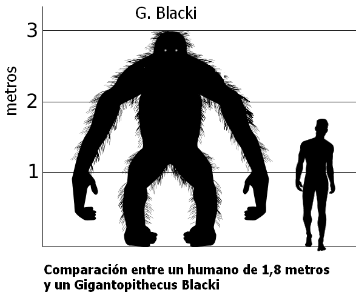

Gigantopithecus
Klik hier voor meer informatie over de Gigantopithecus
Gigantopithecus is een geslacht van uitgestorven primaten
uit de groep van de mensapen (Hominidae). Het geslacht kreeg in 1935 zijn naam
die 'reusachtige aap' betekent, toen de typesoort Gigantopithecus blacki
benoemd werd door Ralph von Koenigswald.
Grootte

Gigantopithecus is een geliefd onderwerp geworden in
populair-wetenschappelijke boeken en wordt daar voorgesteld
als een waar monster van ruim drie meter hoog met een
gewicht van ruim een halve ton. Deze primaat wordt aldus
gerekend tot de megafauna, de dierengemeenschap tussen
een miljoen jaar en honderdduizend jaar geleden waarvan de
leden een stuk groter waren dan de huidige dieren. Over
grootte en gewicht kunnen naar moderne inzichten geen
definitieve uitspraken worden gedaan, omdat tot nu toe alleen
kaakelementen en tanden zijn gevonden. Deze zijn echter
aanzienlijk groter dan hun tegenhangers in zowel levende als
uitgestorven apen. Het is zeer waarschijnlijk dat de soort het
grootste bekende lid van de Hominoidea is of van de primaten in het algemeen.
Naam
Gigantopithecus is een neologisme. De naam van het geslacht is afgeleid van de Griekse
woorden πίθηκος (oud-Grieks uitgesproken als píthēkos): 'aap' en γίγας, gígas 'reus'. Het
epitheton van het type, Gigantopithecus blacki, eert de Canadese arts en paleoantropoloog
Davidson Black, die stierf in 1934, 'wiens fundamentele werkzaamheden aangaande
Sinanthropus hem een blijvende herinnering zal verzekeren en wie het helaas niet meer gegund
was zijn werk te voltooien'. Gigantopithecus blacki betekent dus 'Black's gigantische aap'. Toen
Gigantopithecus pas benoemd was, dachten veel geleerden dat hij nauw aan de mens verwant
was. Sommigen vonden de naam daarom ongepast. In 1946 suggereerde Franz Weidenreich
de naam Gigantanthropus, wat in 1950 weer door Hans Weinert gewijzigd werd in
Giganthropus. Beide namen zijn jongere synoniemen van Gigantopithecus,
welke prioriteit heeft en aldus de geldige naam blijft.